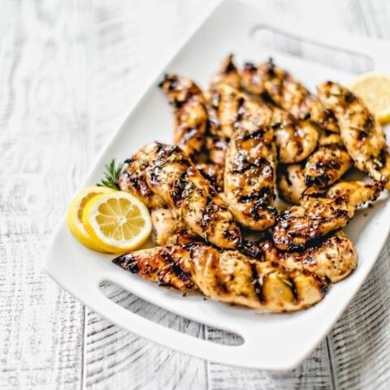

Honey Mustard Grilled Chicken

Description:
'If ye have faith as a grain of mustard seed',
ye shall make and enjoy this simple, tangy, delicious grilled chicken dish!
Time and Servings:
- Prep: 15 mins
- Cook: 20 mins
- Total: 35 mins
- Total servings: 4
Ingredients:
- 1/3 cup Dijon mustard
- 1/4 cup Honey
- 2 tablespoons mayonnaise
- 1 teaspoons Steak Sauce
- 4 skinless chicken breast Halves
Directions:
- Preheat the grill for medium heat.
- In a shallow bowl, mix the mustard,
honey, mayonnaise, and steak sauce.
Set aside a small amount of the honey
mustard sauce for basting, and dip the
chicken into the remaining sauce to coat.
- Lightly oil the grill grate. Grill
chicken over indirect heat for 18 to 20
minutes, turning occasionally, or until
juices run clear. Baste occasionally with
the reserved sauce during the last 10
minutes. Watch carefully to prevent burning!